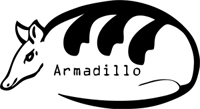

http://bioinfo.uqam.ca/armadillo
armadillo.workflow@gmail.com
|
Armadillo Workflow Platform v1.0
A simple pipeline system for phylogenetic analysis
Copyright (C) 2009-2010 Etienne Lord,
Mickael Leclercq
This program is free software: you can redistribute it and/or modify
it under the terms of the GNU General Public License as published by
the Free Software Foundation, either version 3 of the License, or
(at your option) any later version.
This program is distributed in the hope that it will be useful,
but WITHOUT ANY WARRANTY; without even the implied warranty of
MERCHANTABILITY or FITNESS FOR A PARTICULAR PURPOSE. See the
GNU General Public License for more details.
You should have received a copy of the GNU General Public License
along with this program. If not, see
<http://www.gnu.org/licenses/>.